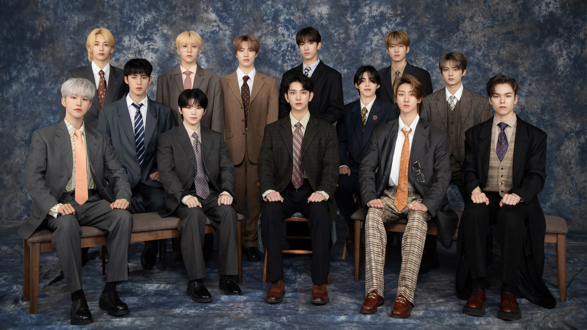

SEVENTEENMy Top 5 SEVENTEEN Songs
Circle, Pinwheel, God of Music, Campfire, and Kidult — the songs that live in my heart.
Read More →✨ Welcome to my corner of the internet ✨
A cozy space where I share my thoughts, fandom love, fashion finds, and everyday moments.
Read the Blog
SEVENTEENCircle, Pinwheel, God of Music, Campfire, and Kidult — the songs that live in my heart.
Read More → FASHION
FASHION
Sweater weather is finally here. Here are my favorite cozy outfits for autumn.
Read More → LIFE
LIFE
The 5-step ritual that helps me start each day with calm.
Read More →✍️ Wattpad Corner
A peek into my drafts folder — the love letters, daydreams, and half-finished chapters I keep just for myself.
Every writer has a secret shelf. This is mine. 💌
A slow-burn romance set in a small seaside town.
Two strangers, one notebook, and a winter of letters.